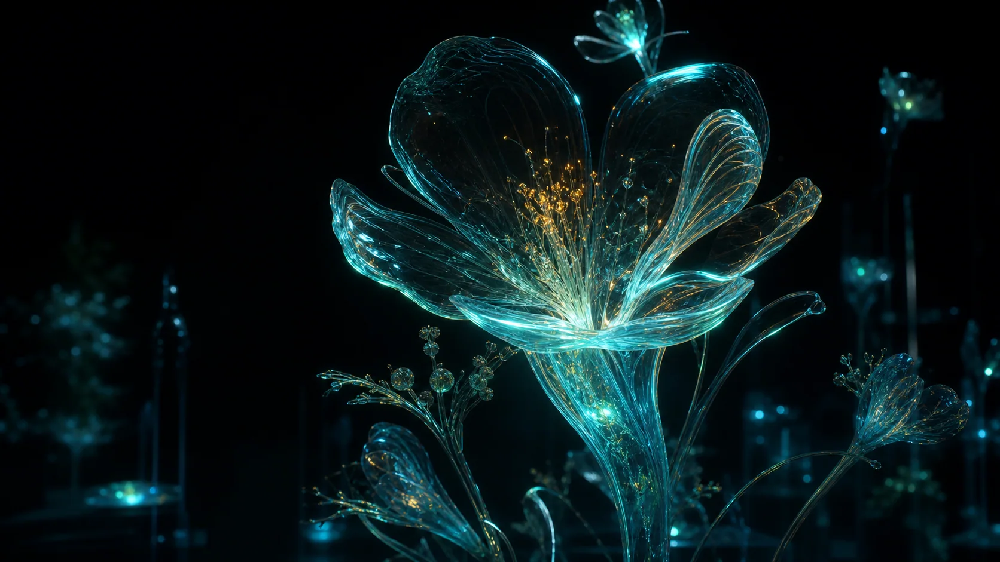

Glass bloom
Depth 12.4m
23:41Specimen 0A — Noctiluca vitrea
A living catalogue of organisms that learned to manufacture the night.
Begin observation ↘Scroll to descend / 12.4m
We collect no bodies.
Only behavior, light, and the quiet architectures that appear after dark.

Recent observations
Depth 12.4m
23:41Depth 18.9m
00:17Depth 31.2m
02:06